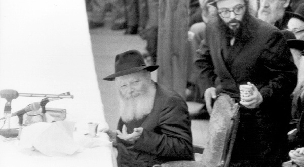

King and Rav
The Rebbe explains that Moshiach has two main roles: as king and teacher. As king, he raises up the spiritual status of the Jewish Nation as a whole to a level they could not reach as individuals. As rav he guides and teaches the Jewish people, like the leaders of the Sanhedrin in previous generations. We, as Chassidim of the Rebbe, have seen openly for many years how the Rebbe is carrying out these two functions, as king and rav; sometimes both simultaneously and sometimes each separately. On Yud-Aleph Nissan we not only celebrate the birth of our king, the leader of the entire nation and ultimately the entire world, we also need to feel how it is a personal celebration and birth for each of us personally.

WORDS OF WISDOM FROM A WAYWARD CHASSID
A fifteen year old boy from a beautiful Chassidishe family veered off the derech. He was drawn after friends who were a bad influence until he reached the point of becoming addicted to drugs. He ended up in a rehab center near Beit Shaan. As soon as Anash in Beit Shaan heard about this sad story, they wanted to get involved and help him, knowing he was alone in a tough institution.
At first, we were not given permission to enter the rehab center. The administration explained to us that the rehab process takes place in four stages with rules for each stage. In the first stage, the person cannot receive visitors and phone calls and cannot leave the premises. In the second stage, he is allowed visitors but cannot leave. In the third stage, he is allowed on brief outings accompanied by a counselor and only in the fourth stage is he allowed out on his own.
Since the boy was in stage one, he could not be visited. It was only after we insisted and explained that we had to bring him food under the Badatz hechsher (otherwise, he wouldn’t eat) and after getting the parents involved, that we were given special permission to go twice a day and bring him food. Of course, along with the physical food we provided spiritual food in encouraging conversations and divrei Torah.
Before Yud-Tes Kislev, we were determined to have the bachur join a farbrengen. The bachur wanted to do so very much, but the administration of the rehab place would not allow it. “It’s not enough that you come and visit him, you also want to take him out?!”
Once again, we got the parents involved and we explained to the staff that Yud-Tes Kislev is Rosh HaShana for Chassidus and just like on Rosh HaShana everyone has to hear the shofar, on Yud-Tes Kislev everyone has to attend a farbrengen. In the end, they agreed to release him for just one half hour (maybe they inquired as to how long t’kios take …).
They asked where the farbrengen would be held, and figured out how long it would take to get there and back and added a half an hour. They warned us to bring him back on time or else he would suffer some serious consequences. We agreed.
The bachur arrived and the farbrengen was underway. About a hundred men from Beit Shaan and the kibbutzim were sitting there and the atmosphere was warm and uplifting. Suddenly, someone noticed him in the entrance and gave him a hearty “shalom aleichem.” He also loudly said, “It’s good you came since you have a good voice. Come sing some Chassidishe songs into the microphone.”
Someone pushed the bachur toward the microphone and there he was, ready to sing. Then something unexpected happened. He asked whether he could say a few words before he sang. The truth is that my heart skipped a beat. I was very nervous. What on earth would he say? But the bachur did not wait; he just began speaking.
“I come from a frum, Chassidishe home. But you know that I made foolish mistakes, as many boys do. I left home and yeshiva and hung out with friends who weren’t the most religious. I want to tell you that all my friends did a lot of things that I don’t even want to talk about. These friends always tried to get me to join them but I wasn’t willing. Do you know what saved me?
“Every time they asked me to join them, I was reminded of the big picture of the Rebbe hanging in the living room at home and I said to myself: That is my Rebbe and I cannot go with friends to do these bad things. The Rebbe is the one who saved me and protected me.
“In conclusion, I want to tell you parents, fathers of children, if you want your children to grow up in the right way, you should know that you have to be connected to the Rebbe. Bring the Rebbe into your home, go in the Rebbe’s way. It is only this which will protect your children.”
Everyone applauded and some wiped away a tear. The bachur went on to sing “Tzama Lecha Nafshi,” then “An’im Z’miros,” “Pada B’shalom Nafshi.” By that time there were only three minutes left before he had to return to the rehab center. He glanced at his watch and said he had to sing one more song, a camp song “I am Yours Forever,” which expresses the love of a Chassid for the Rebbe. He closed his eyes and sang and then, it was back to rehab.
I weighed whether to write this story or not, for obvious reasons. What tipped the scale in favor of writing it was the fact that we need to remember that even when things don’t look good, when a child slips and slides downward, he has the Rebbe as king and beloved rav who will save him.
AT THAT MOMENT, I KNEW
A bachur from Givatayim from an irreligious home became acquainted with Judaism and Chassidus. He became a baal t’shuva and spent some years learning in the Chabad yeshiva in Ramat Aviv and went to visit the yeshiva in Tzfas. He joined a farbrengen with some bachurim and said this about his life:
“I was a typical Israeli kid, not religious, not traditional, just an Israeli kid. With the education I got at home, I would not have ended up in a yeshiva. So what happened? In my neighborhood there is a Chabad house and in the front window they put a plasma screen which operated 24 hours a day. It constantly played videos of the Rebbe. As I would walk down that street, I would occasionally glance at the screen and see the Rebbe speak, give out dollars, pray or walk among the Chassidim.
“One day, I stopped near the Chabad house and watched the Rebbe stride along like a king in a parade. Maybe he was walking into a farbrengen or to the platform at the Lag B’Omer parade; whatever it was, it was impressive. It took mere seconds but made a mighty impression on me. I saw the strength along with the humility, the great joy along with absolute solemnity. At that moment I knew: I have a king! The rest was merely a continuation of that insight. I walked into the Chabad house and decided to attend t’fillos and shiurim. In short, I entered the king’s legion where I serve till this day.”
FROM CHABAD IN TUNISIA TO RADIO BEER SHEVA
In Beer Sheva there is a wonderful man who, along with his senior position and many public roles, does not forget the period of time he learned in the Chabad elementary school in Tunisia, a period that has an impact on him till today. Mr. Yossi Kimchi is the director of the southern district of Kupat Cholim. In his free time he is the director and a broadcaster at Beer Sheva’s radio station. Mr. Kimchi introduces himself as a proud Chabad Chassid and publicizes the Rebbe’s views on every issue. At every opportunity he represents Chabad gracefully and powerfully.
On his Kabbalas Shabbos radio program he does not miss an opportunity to share Chassidic ideas about Shabbos and the parsha. His favorite book which doesn’t move from his desk is HaShabbos B’Kabbala u’b’Chassidus written by a Beis Moshiach columnist, Rabbi Yosef Karasik, shliach in Bat Chefer. Every Erev Shabbos he reads ideas from the book on his broadcast.
Mr. Kimchi is in close touch with the shluchim in Beer Sheva, mainly with R’ Moshe Ariel Roth who has served for years as the rav of the k’hilla in Naot Lon. He is a chazan and paytan (one who is versed in Sephardic poetic liturgy) in the big shul in that neighborhood and the shul is open to all Chabad events, the Moshiach Seuda, shiurim, and weekly visits by the shluchim. When his friends want to tease him, they say that he himself actually runs the Chabad shul. Mr. Kimchi responds by saying: All the Rebbe’s activities suit us and are welcome by us with open arms.
To him, the Rebbe is both king and rav.
Shmuelevitz. "King and Rav." Beis Moshiach, no. 923 (April 9, 2014).